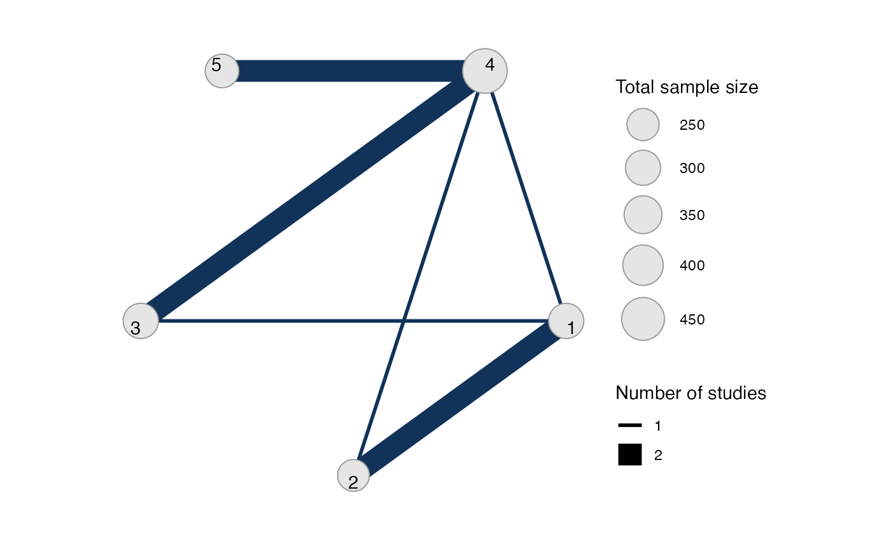

Multiple data sources created using set_ipd(), set_agd_arm(), or
set_agd_contrast() can be combined into a single network for analysis.
Arguments
- ...
multiple data sources, as defined using the
set_*functions- trt_ref
reference treatment for the entire network, as a string (or coerced as such) referring to the levels of the treatment factor variable
Value
An object of class nma_data
See also
set_ipd(), set_agd_arm(), and set_agd_contrast() for defining
different data sources.
print.nma_data() for the print method displaying details of the
network, and plot.nma_data() for network plots.
Examples
## Parkinson's - combining contrast- and arm-based data
studies <- parkinsons$studyn
(parkinsons_arm <- parkinsons[studies %in% 1:3, ])
#> studyn trtn y se n diff se_diff
#> 1 1 1 -1.22 0.504 54 NA 0.504
#> 2 1 3 -1.53 0.439 95 -0.31 0.668
#> 3 2 1 -0.70 0.282 172 NA 0.282
#> 4 2 2 -2.40 0.258 173 -1.70 0.382
#> 5 3 1 -0.30 0.505 76 NA 0.505
#> 6 3 2 -2.60 0.510 71 -2.30 0.718
#> 7 3 4 -1.20 0.478 81 -0.90 0.695
(parkinsons_contr <- parkinsons[studies %in% 4:7, ])
#> studyn trtn y se n diff se_diff
#> 8 4 3 -0.24 0.265 128 NA 0.265
#> 9 4 4 -0.59 0.354 72 -0.35 0.442
#> 10 5 3 -0.73 0.335 80 NA 0.335
#> 11 5 4 -0.18 0.442 46 0.55 0.555
#> 12 6 4 -2.20 0.197 137 NA 0.197
#> 13 6 5 -2.50 0.190 131 -0.30 0.274
#> 14 7 4 -1.80 0.200 154 NA 0.200
#> 15 7 5 -2.10 0.250 143 -0.30 0.320
park_arm_net <- set_agd_arm(parkinsons_arm,
study = studyn,
trt = trtn,
y = y,
se = se,
sample_size = n)
park_contr_net <- set_agd_contrast(parkinsons_contr,
study = studyn,
trt = trtn,
y = diff,
se = se_diff,
sample_size = n)
park_net <- combine_network(park_arm_net, park_contr_net)
# Print network details
park_net
#> A network with 3 AgD studies (arm-based), and 4 AgD studies (contrast-based).
#>
#> ------------------------------------------------------- AgD studies (arm-based) ----
#> Study Treatment arms
#> 1 2: 1 | 3
#> 2 2: 1 | 2
#> 3 3: 4 | 1 | 2
#>
#> Outcome type: continuous
#> -------------------------------------------------- AgD studies (contrast-based) ----
#> Study Treatment arms
#> 4 2: 4 | 3
#> 5 2: 4 | 3
#> 6 2: 4 | 5
#> 7 2: 4 | 5
#>
#> Outcome type: continuous
#> ------------------------------------------------------------------------------------
#> Total number of treatments: 5
#> Total number of studies: 7
#> Reference treatment is: 4
#> Network is connected
# Plot network
plot(park_net, weight_edges = TRUE, weight_nodes = TRUE)

## Plaque Psoriasis - combining IPD and AgD in a network
# Set up plaque psoriasis network combining IPD and AgD
library(dplyr)
pso_ipd <- filter(plaque_psoriasis_ipd,
studyc %in% c("UNCOVER-1", "UNCOVER-2", "UNCOVER-3"))
pso_agd <- filter(plaque_psoriasis_agd,
studyc == "FIXTURE")
head(pso_ipd)
#> studyc trtc_long trtc trtn pasi75 pasi90 pasi100 age bmi pasi_w0
#> 1 UNCOVER-1 Ixekizumab Q2W IXE_Q2W 2 0 0 0 34 32.2 18.2
#> 2 UNCOVER-1 Ixekizumab Q2W IXE_Q2W 2 1 0 0 64 41.9 23.4
#> 3 UNCOVER-1 Ixekizumab Q2W IXE_Q2W 2 1 1 0 42 26.2 12.8
#> 4 UNCOVER-1 Ixekizumab Q2W IXE_Q2W 2 0 0 0 45 52.9 36.0
#> 5 UNCOVER-1 Ixekizumab Q2W IXE_Q2W 2 1 0 0 67 22.9 20.9
#> 6 UNCOVER-1 Ixekizumab Q2W IXE_Q2W 2 1 1 1 57 22.4 18.2
#> male bsa weight durnpso prevsys psa
#> 1 TRUE 18 98.1 6.7 TRUE TRUE
#> 2 TRUE 33 129.6 14.5 FALSE TRUE
#> 3 TRUE 33 78.0 26.5 TRUE FALSE
#> 4 FALSE 50 139.9 25.0 TRUE TRUE
#> 5 FALSE 35 54.2 11.9 TRUE FALSE
#> 6 TRUE 29 67.5 15.2 TRUE FALSE
head(pso_agd)
#> studyc trtc_long trtc trtn pasi75_r pasi75_n pasi90_r pasi90_n
#> 1 FIXTURE Etanercept ETN 4 142 323 67 323
#> 2 FIXTURE Placebo PBO 1 16 324 5 324
#> 3 FIXTURE Secukinumab 150 mg SEC_150 5 219 327 137 327
#> 4 FIXTURE Secukinumab 300 mg SEC_300 6 249 323 175 323
#> pasi100_r pasi100_n sample_size_w0 age_mean age_sd bmi_mean bmi_sd
#> 1 14 323 326 43.8 13.0 28.7 5.9
#> 2 0 324 326 44.1 12.6 27.9 6.1
#> 3 47 327 327 45.4 12.9 28.4 5.9
#> 4 78 323 327 44.5 13.2 28.4 6.4
#> pasi_w0_mean pasi_w0_sd male bsa_mean bsa_sd weight_mean weight_sd
#> 1 23.2 9.8 71.2 33.6 18.0 84.6 20.5
#> 2 24.1 10.5 72.7 35.2 19.1 82.0 20.4
#> 3 23.7 10.5 72.2 34.5 19.4 83.6 20.8
#> 4 23.9 9.9 68.5 34.3 19.2 83.0 21.6
#> durnpso_mean durnpso_sd prevsys psa
#> 1 16.4 12.0 65.6 13.5
#> 2 16.6 11.6 62.6 15.0
#> 3 17.3 12.2 64.8 15.0
#> 4 15.8 12.3 63.0 15.3
pso_ipd <- pso_ipd %>%
mutate(# Variable transformations
bsa = bsa / 100,
prevsys = as.numeric(prevsys),
psa = as.numeric(psa),
weight = weight / 10,
durnpso = durnpso / 10,
# Treatment classes
trtclass = case_when(trtn == 1 ~ "Placebo",
trtn %in% c(2, 3, 5, 6) ~ "IL blocker",
trtn == 4 ~ "TNFa blocker"),
# Check complete cases for covariates of interest
complete = complete.cases(durnpso, prevsys, bsa, weight, psa)
)
pso_agd <- pso_agd %>%
mutate(
# Variable transformations
bsa_mean = bsa_mean / 100,
bsa_sd = bsa_sd / 100,
prevsys = prevsys / 100,
psa = psa / 100,
weight_mean = weight_mean / 10,
weight_sd = weight_sd / 10,
durnpso_mean = durnpso_mean / 10,
durnpso_sd = durnpso_sd / 10,
# Treatment classes
trtclass = case_when(trtn == 1 ~ "Placebo",
trtn %in% c(2, 3, 5, 6) ~ "IL blocker",
trtn == 4 ~ "TNFa blocker")
)
# Exclude small number of individuals with missing covariates
pso_ipd <- filter(pso_ipd, complete)
pso_net <- combine_network(
set_ipd(pso_ipd,
study = studyc,
trt = trtc,
r = pasi75,
trt_class = trtclass),
set_agd_arm(pso_agd,
study = studyc,
trt = trtc,
r = pasi75_r,
n = pasi75_n,
trt_class = trtclass)
)
# Print network details
pso_net
#> A network with 3 IPD studies, and 1 AgD study (arm-based).
#>
#> ------------------------------------------------------------------- IPD studies ----
#> Study Treatment arms
#> UNCOVER-1 3: IXE_Q2W | IXE_Q4W | PBO
#> UNCOVER-2 4: ETN | IXE_Q2W | IXE_Q4W | PBO
#> UNCOVER-3 4: ETN | IXE_Q2W | IXE_Q4W | PBO
#>
#> Outcome type: binary
#> ------------------------------------------------------- AgD studies (arm-based) ----
#> Study Treatment arms
#> FIXTURE 4: PBO | ETN | SEC_150 | SEC_300
#>
#> Outcome type: count
#> ------------------------------------------------------------------------------------
#> Total number of treatments: 6, in 3 classes
#> Total number of studies: 4
#> Reference treatment is: PBO
#> Network is connected
# Plot network
plot(pso_net, weight_nodes = TRUE, weight_edges = TRUE, show_trt_class = TRUE)